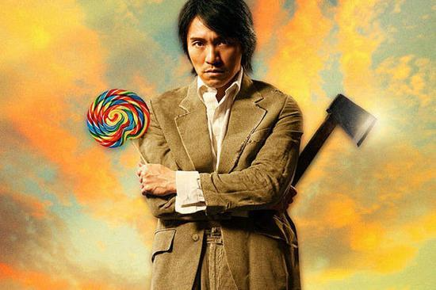
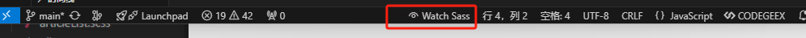

黑白滤镜
filter:grayscale(1); // grayscale 灰阶滤镜 0原色 0.5灰色 1 黑白
全部内容设置：html{filter:grayscale(1);}
部分设置：class{filter:grayscale(1);}
css新单位[vmin || vmax]
vmin:按照当前视图窗口宽/高，取两者最小的值
vmax:按照当前视图窗口宽/高，取两者最大的值
-- 图片宽度使用 vmin


-- 图片宽度使用 vmax && 并应用了黑白滤镜
css 粘性定位
- A
- Apple
- Apple
- Apple
- Apple
- B
- Buy
- Buy
- Buy
- Buy
- C
- Car
- Car
- Car
- Car
- D
- Data
- Data
- Data
- Data
解决 chrome 字号限制
谷歌浏览器对字号有限制，最小为12px
解决办法：
1. 设置html标签的 font-size
2. 设置transform:scale(0.5),缩小 // transform 属性只针对块盒和行块盒有效[块级元素(block),行内块元素(inline-block)]
3. 如果标签为非 块盒/行块盒 ,设置 display 为 [block, inline-block]
css 实现彩色边框
我就是彩色的边框
border-image:linear-gradient(
265.13deg,
#a392e8 -6.01%,
#f17e99 33.34%,
#f0933d 48.66%,
#96be2a 64.54%,
#5acba2 83.26%,
)
20%;
border-style: solid;
css 实现文字描边
1. 文字阴影方式，通过6个方向阴影来实现
缺点：不能完全模拟出扩散效果,无法支持文字透明
TEXT STROKE
2. 非标准属性，webkit内核提供
缺点：兼容性问题
TEXT STROKE
css 渐变色相关
渐变类型：
1 线性渐变（Linear gradient）
2 径向渐变（Radial gradient）
3 角向渐变（Conic gradient）
4 多重渐变（Repeating gradient）[Repeating linear gradient || Repeating Radial gradient || Repeating Conic gradient]
渐变色函数：
linear-gradient()
radial-gradient()
conic-gradient()
repeating-linear-gradient()
repeating-radial-gradient()
repeating-conic-gradient()
使用方法举例：
.test {
background: linear-gradient(#e66465, #9198e5);
}
能够支持渐变色的属性：
background-image
border-image
list-style-image
mask-image
filter
shape-image-threshold
渐变色背景
.bg {
width: 100px;
height: 100px;
background-image: linear-gradient(rgba(0, 0, 255, 0.5), rgba(255, 255, 0, 0.5))
}
渐变色直角边框
.border {
width: 100px;
height: 100px;
border-width: 10px;
border-style: solid;
border-image-source: linear-gradient(0deg, rgb(25, 25, 209) 0%, rgb(255, 0, 220) 97.9381%);
border-image-slice: 10;
}
渐变色圆角边框
.box {
position: absolute;
inset: 0;
width: 200px;
height: 200px;
}
.box::before {
content: "";
position: absolute;
inset: 0;
background:linear-gradient(45deg,red,blue);
-webkit-mask-image:
linear-gradient(#fff 0 0),
linear-gradient(#fff 0 0);
-webkit-mask-clip:
content-box,
border-box;
-webkit-mask-composite: xor;
mask-composite: exclude;
padding: 10px;
border-radius: 50px;
}
说明：
1.使用伪类选择器目的是防止 .box 的内容被剪切。
2.background 设置背景渐变色。
3.border-radius 控制圆角大小。
4.mask-image 设置两个遮罩层。
5.mask-clip 对遮罩层进行剪切，第一个遮罩层覆盖内容框 content-box，第二个遮罩层覆盖 border 框 border-box , 也就是包括 padding 的部分。
6.mask-composite 将两个遮罩层混合剪切。由于浏览器的差异使用了前缀属性，但两个属性值的意思都是遮罩排除，也就是后面遮罩重合的地方排除，当做透明处理。
7.边框的宽度则使用 padding 进行控制。
渐变色虚线边框
.box {
position: absolute;
inset: 0;
width: 200px;
height: 200px;
}
.box::before {
content: "";
position: absolute;
inset: 0;
background: linear-gradient(45deg, gold, purple, cyan, deeppink);
mask: url("data:image/svg+xml,%3csvg width='100%25' height='100%25' xmlns='http://www.w3.org/2000/svg'%3e%3crect width='100%25' height='100%25' fill='none' rx='57' ry='57' stroke='black' stroke-width='4' stroke-dasharray='6%2c 14' stroke-dashoffset='0' stroke-linecap='square'/%3e%3c/svg%3e");
border-radius: 57px;
}
这里的复杂点是需要一个 svg 图片做遮罩。渐变色还是通过遮罩露出的背景颜色。
svg 是可以作为 css 图片使用的。它本身可以绘制虚线，支持圆角等，并且虚线的长度、宽度，容器的圆角都可以调节尺寸。
步骤如下：
1.background 设置需要的渐变色；
2.mask 设置 svg 图片作为遮罩；
3.rx='57' ry='57' 控制圆角的尺寸；
4.stroke-width='4' 控制线条宽度；
5.stroke-dasharray 控制虚线形状。
渐变色文字
.text {
color: transparent;
background-image: linear-gradient(45deg, gold, purple, cyan, deeppink);
-webkit-background-clip: text;
background-clip: text;
}
带阴影的渐变色文字
.text {
color: transparent;
background-image: linear-gradient(45deg, gold, purple, cyan, deeppink);
-webkit-background-clip: text;
background-clip: text;
filter: drop-shadow(#0ff 10px 10px 5px);
}
省略号代替超出文本框的渐变色文字
.text {
width: 500px;
height: auto;
color: transparent;
background-image: radial-gradient(rgb(44, 234, 218) 15.4639%, rgb(0, 59, 255) 99.4845%);
-webkit-background-clip: text;
display: -webkit-box;
-webkit-box-orient: vertical;
-webkit-line-clamp: 2;
}
说明：
-webkit-box 将对象作为弹性伸缩盒子模型显示。
-webkit-box-orient: vertical 从上到下垂直排列子元素。
省略号代替超出文本框的渐变色文字得有很多内容才能撑开达到目的